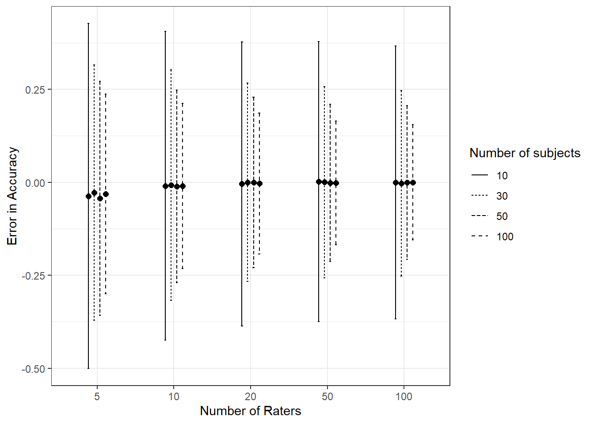
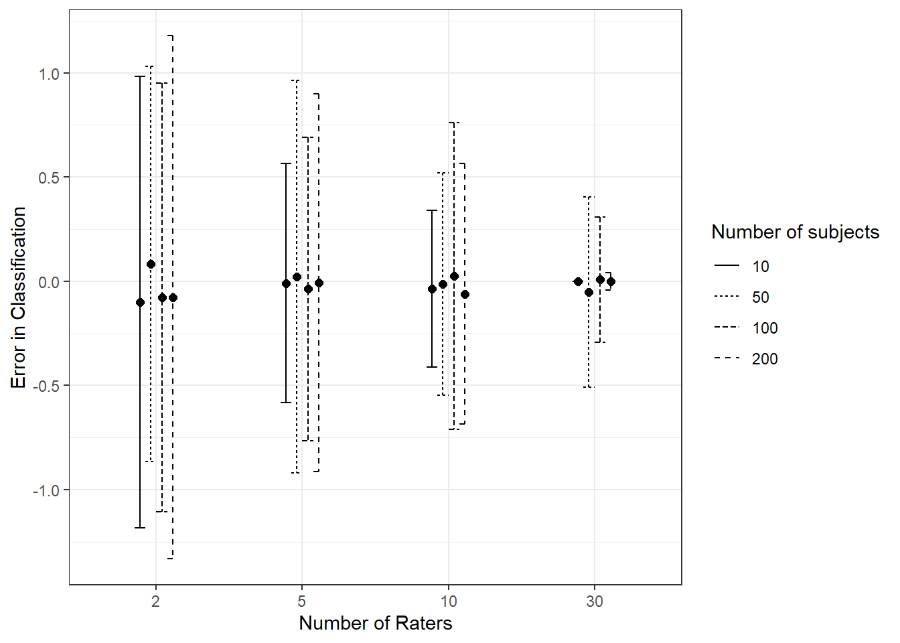

We’ve seen how adding parameters leads to more explanatory models. This idea can be expanded, for example to simultaneously estimate the accuracy of each rater and classification of subject individually. Such models are sometimes called hierarchical or random effects models or fixed effects models, depending on the research tradition. As noted in , fixed versus random effects are not good descriptions for Bayesian models. This is elaborated on in . What all these have in common is that they allow for complex relationships of average and individual parameters, for example having a grand average accuracy parameter \(a\) in addition to individual accuracy parameters \(a_j\) for each rater \(j\). In a Bayesian context, we can do “partial pooling” by allowing the scale (standard deviation) of the \(a_j\) parameters to be estimated from the data, rather than fixed at a constant value. This allows the model to estimate the degree to which the raters are similar to each other, and to the grand average, which can increase likelihood.
Individual rater parameters and subject truth values are of interest in many contexts. In educational psychology, we might want to know how well a teacher is able to assess student learning, and how well the students are learning. In medical research, we might want to know how well a doctor is able to diagnose a disease, and how well the patients are responding to treatment. In machine learning, we are likely concerned with the quality of training data drawn from human classifications. The ratings of consumer products on sites like Amazon or Yelp can be polluted with bad reviews, so some means of cleaning that data is useful.
There is an epistemological complexity in indexed \(t_*\)-\(a_*\)-\(p_*\) models that has practical implications. The three-parameter \(t\)-\(a\)-\(p\) model assumes that each subject \(i\) being observed has a true classification of Class 1 or Class 0 as indicated by the random variable \(T_i\). This is different from a model of the probability that a case is in Class 1. In the analysis so far, we’ve only dealt with expectations over a set of observations, so the distinction wasn’t apparent. But if we create individual parameters \(a_j\) for each rater, estimating those depends on true classifications of subjects existing, even if we cannot know what they are. Not all computational methods for estimating the parameters are not well-suited to enforce the discrete constraint that \(t_i \epsilon \{0,1\}\) for each subject \(i\). One work-around is to average out (marginalize) truth values over the ratings for a subject. That idea is outlined in @stanuser, section 1.10 and implemented in several algorithms found in @carpenter2008multilevel. Another approach is to use a threshold function to map a continuous latent variable to a discrete truth value. Recall that a “latent” variable is allowed to have real values, usually with a normal distribution centered at zero, but is not directly observed. We can convert from the latent scale to an approximation of a discerte one by applying a threshold function like the logistic function, \(\tau(s) = \frac{1}{1+e^{-cs}}\), which has the property that \(\tau(s) \rightarrow 0\) as \(s \rightarrow -\infty\) and \(\tau(s) \rightarrow 1\) as \(s \rightarrow \infty\). The steepness of the thresholding can be adjusted via the parameter \(c\). This allows the truth parameters to remain real values, and the transformaion differentiable, but approximates a discrete truth value. In simulations, this worked to improve the estimates of rater accuracy parameters.
There are other reasons to use latent variables, which is one motivation for using item response theory or Rasche models. It’s straightforward to include predictor variables in the model, for example to estimate the effect of a rater’s experience on their accuracy. This is a common approach in educational psychology, where the goal is to estimate the effect of a teacher’s experience on their ability to assess student learning. Another option is to include a “difficulty” parameter for each subject, to allow for some subjects to be inherently more difficult to classify than others.
One consideration for a \(t_*\)-\(a_*\)-\(p_*\) model is that we must decide what model relationship there is between the \(a_*\) and \(p_*\) parameters. The three main options are (1) leave \(p\) a global average and don’t estimate indexed parameters for it, (2) assign \(p_j\) for each rater, or (3) assign \(p_i\) for each subject. The second option is a Cohen kappa approach. Generally this option will have identifiability problems for unbalanced data. To see that, consider \(c_{ij} = T_i a_j + \bar{a_j}p_j\) when \(T_i = 0\). If this is the large majority of cases, then the same rating will be obtained from either low accuracy or high guess rates, and the model will not be able to distinguish between them (the kappa paradox situation). This is not the case for the third option, where the \(p_i\) parameters are assigned to subjects, not raters. In simulations across a range of conditions, the third option performed best.
1.1 Threshold Functions
One way to retreat slightly from discrete truth values is to borrow an idea from the latent scale approach used in log-odds methods, and parameterize \(t_i\) as \(t_i = \tau(s_i)\), where \(s_i \epsilon \mathbb{R}\) is a latent variable representing characteristics of the subject being observed and categorized, and \(\tau\) is a thresholding function that very nearly maps \(x\) to \(\{0,1\}\) in a continous manner. A reasonable choice for \(\tau\) is a sigmoid like the logistic function, \(\tau(s) = \frac{1}{1+e^{-s}}\), which has the property that \(\tau(s) \rightarrow 0\) as \(s \rightarrow -\infty\) and \(\tau(s) \rightarrow 1\) as \(s \rightarrow \infty\). One advantage of this approach is that we can build full regression models for the parameters, e.g. to incorporate subject-specific or rater-specific information as explanatory variables. In simulations, this approach can work, but the sigmoid operation significantly slows down convergence of the MCMC sampler.
A second approach, which deserves more analysis, is to penalize the likelihood function with a term proportional to \(\sum{t_i(1-t_i)}\). This is a crude way to encourage the sampler to find values of \(t_i\) that are close to 0 or 1, but not exactly 0 or 1. This also slows down computation significantly.
The third, most practical solution for simple indexing, where explanatory variables are not needed, is to first estimate the three-parameter \(t\)-\(a\)-\(p\) model and then use those estimates to recenter the indexed parameters of interest. In simulations, this worked very will in a fully-indexed \(t_i\)-\(a_j\)-\(p_j\) model, where \(i\) indexes subjects being classified and \(j\) indexes raters. But it is not clear that it will work in all cases.
The likelihood function for \(t_i\)-\(a_j\)-\(p_j\) can be expressed as the product of independent ratings, as
where \(t_i \epsilon(0,1)\) is the estimated probability that the \(i\)th case is Class 1, \(a_j\) is the estimated accuracy of the \(j\)th rater, and constant \(c\) is the known fraction of \(\overline{C}\) ratings in the whole data set. The prior distributions of the parameters \((\t_i = \tau(s_i),a_j,p_j)\) are assumed to be uniform on \((0,1)\).
To interpret induced parameters in the context of the model in figure \(\ref{fig:tree}\), a slight modification to the likelihood function is useful. The generative model in figure \(\ref{fig:tree}\) is conditional on the true class being binary, not a probability between zero and one. This departure from the model is necessary computationally, so that the truth probability of each subject can smoothly evolve to maximize likelihood, but in practice, we’d like the values of \(t_i\) to be close to zero or one when computing likelihoods. This is accomplished using a soft threshold on \(t_i\) with a sigmoid \(\text{sig}_d(t) := 1/(1 + e^{-d(t-.5)})\), where \(d\) is a discrimination parameter that adjusts steepness. The final likelihood function is
Inference of the \(N + R\) parameters maximizes likelihood using \(\eqref{eq:re_model}\) assuming that each rating is independent of the others so that total probability is the product of the individual rating probabilities.
To test the model \(N=1000\) subjects with \(R=5\) raters each were simulated with a Class 1 rate of \(p=.20\), and with rater accuracies of .1, .3, .5, .7, and .9. The sigmoid discrimination parameter was set to \(d=30\). The model was specified in the Stan programming language, with four chains of 1000 iterations each, the first 200 being discarded as warm-up samples to control auto-correlation.
Code
# see code/plain model detail sim.R for detailssim_summary_a <-read_rds("data/sim_summary.rds")sim_summary_a |>ggplot(aes(x =as.factor(n_raters), y = mean_error,ymin = mean_error - SE*2, ymax = mean_error + SE*2,group =`Number of subjects`,linetype =`Number of subjects`)) +geom_point(size =2, position =position_dodge(.3)) +geom_errorbar(position =position_dodge(.3),width = .1) +theme_bw() +xlab("Number of Raters") +ylab("Error in Accuracy")

Figure 1: Estimates of individual rater accuracy with uniformly distributed t-a-p parameters indexed by rater and subject, with bars encompassing two standard deviations from the mean. Each data point represents 200 simulations, using the three parameter t-a-p model to adjust individual accuracy estimates.
Code
# see code/plain model detail sim.R for detailssim_summary_t <-read_rds("data/sim_summary_t.rds")sim_summary_t |>ggplot(aes(x =as.factor(n_raters), y = mean_error,ymin = mean_error - SE*2, ymax = mean_error + SE*2,group =`Number of subjects`,linetype =`Number of subjects`)) +geom_point(size =2, position =position_dodge(.3)) +geom_errorbar(position =position_dodge(.3),width = .3) +theme_bw() +xlab("Number of Raters") +ylab("Error in Classification")

Figure 2: Estimates of individual subject classification accuracy with uniformly distributed t-a-p parameters indexed by rater and subject, with bars encompassing two standard deviations from the mean. Each data point represents 200 simulations, using the three parameter t-a-p model to adjust individual accuracy estimates.
For a simulated data set of 5000 ratings analyzed in figure \(\ref{fig:sim_truth}\), the cases are separated quite well even with only five ratings each. The estimated class probabilities \(t_i\) on the horizontal axis take into account estimated rater accuracy, which is imputed for each rater simultaneously. The distributions of posterior samples from the Stan output shows that the parameter estimates recapture individual rater accuracy from the simulated ratings. This does not happen without the soft threshold function to nudge the \(t_i\)s toward zero or one. For smaller data sets, the estimates become noisier. The estimates in figure \(\ref{fig:sim_truth2}\) have only 100 subjects with three raters each, with randomly chosen accuracies. It shows much less certainty about the estimates.
If the model fits the data, the examples show it is possible to recover latent true class probabilities and individual rater accuracies, but a fairly large number of ratings are required to obtain small error bounds.
In addition to general models like \(t\)-\(a\)-\(p\), and the hierarchical model illustrated in this section, mixed effects models are straightforward to construct. For example, a \(t\)-\(a_i\)-\(p\) model can take individual rater accuracies into account when estimating \(t\) and \(p\). This will shrink the accuracy parameters toward their mean, so they are no longer usable as estimates for individual raters.